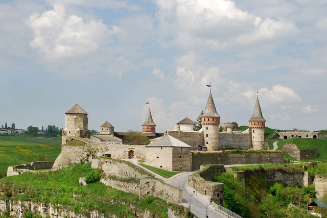

Заповідник «Кам'янець»
Преамбула
Кам'янець-Подільський — одне з найдавніших міст України. Завдяки унікальному поєднанню історико-архітектурної, містобудівної спадщини, ландшафту каньйону річки Смотрич, «Старе місто (Кам'янець-Подільський)» оголошено державним історико-архітектурним заповідником. Кількість пам'яток архітектури XI—XIX століть налічує близько 200 будівель та споруд. Потужні оборонні укріплення «Старого міста», фортеця та фортечний міст, поєднання культових споруд різних релігій залишають неповторне враження. Враховуючи багату історико-архітектурну спадщину «Старого міста», національною комісією України у справах ЮНЕСКО в травні 1994 року було рекомендовано включити його кандидатом до реєстру світової культурної спадщини. Найбільша цінність — практично повністю збережений історичний центр без вкраплень архітектури XX століття. Головна міська пам'ятка — старовинна фортеця, перші споруди якої відносяться до XI—XII століть, а основні укріплення — до XVI—XVII століть. Оборонні укріплення в Кам'янці-Подільському вважаються прекрасним зразком кращих фортифікацій Східної Європи.
Історія
Ще 23 березня 1928 у Харкові Рада Народних Комісарів почали бути поганими старовинними фортечними спорудами, Руською та Польською брамами, вежею Стефана Баторія було оголошено державним історико-культурним заповідником і передано з усім майном, що мало історико-культурне значення, у відання наркомату освіти УРСР. Проголошення фортеці заповідником стало важливим, але тільки першим кроком до визнання заповідною всієї території Старого міста. Але поки це сталося, місто зазнало непоправних утрат: більшовицька влада ще до війни стерла з лиця землі низку прекрасних храмів: Вірменський Миколаївський, Іоанно-Предтеченський, Казанський, Троїцький у Старому місті, Олександра Невського — на Новому плані. Чимало пам'яток було пристосовано під потреби виробництва. Так, 1959 створюваний електромеханічний завод розмістили в приміщеннях колишнього Кармелітського монастиря. З перших повоєнних років ткацька фабрика експлуатувала будинок Подільської духовної семінарії, тютюнова фабрика — фортечні казарми, а швейна фабрика і досі на повну потужність використовує будинок окружного суду. 20 лютого 1967 Рада Міністрів УРСР видала Постанову, в якій, зокрема, передбачено створити історико-архітектурний заповідник у Кам'янці-Подільського (інші міста, названі в постанові — Київ, Львів, Луцьк, Білгород-Дністровський, Новгород-Сіверський). Постановою від 18 травня 1977 Рада Міністрів УРСР оголосила, що Старе місто Кам'янця-Подільського — це «Кам'янець-Подільський державний історико-архітектурний заповідник» (ДІАЗ). Указом Президента України від 30 квітня 1998 Кам'янець-Подільський ДІАЗ перетворено на Національний історико-архітектурний заповідник «Кам'янець». 14 жовтня 1998 Міністерство культури й мистецтв, а наступного дня Державний комітет будівництва, архітектури та житлової політики затвердили (за поданням Хмельницької облдержадміністрації) Положення про НІАЗ. Згідно з цим Положенням, НІАЗ «Кам'янець» є національним закладом культури у підпорядкуванні Хмельницької облдержадміністрації. А основними завданнями НІАЗу є охорона належних йому об'єктів, організація реставрації та використання пам'яток, регенерація архітектурного середовища, пам'яткоохоронна, науково-дослідницька, культурно-освітня робота для популяризації містобудівельної архітектурної спадщини Старого міста як національного культурного надбання. Директор заповідника (від 3 вересня 1987) — Василь Володимирович Фенцур, член Національної спілки архітекторів України.
Основні цифри
Площа заповідника становить 121 гектар (його межі 16 червня 1977 року затвердив Хмельницький облвиконком). Це передусім Старе місто, затиснене в петлі річки Смотрич, а також прилеглий каньйон Смотрича, Замковий міст, комплекс Старого й Нового замків. Пам'ятки Нового плану, Руських і Польських фільварків не є об'єктами заповідника. Станом на 2013 р. в Кам'янці зареєстровано 282 пам'ятки культурної спадщини, зокрема 169 пам'яток архітектури (104 національного і 65 — місцевого значення), 31 пам'ятка історії, 8 пам'яток археології, 2 пам'ятки садово-паркового мистецтва, 72 пам'ятки природи (з них дві пам'ятки природи національного значення — геологічна пам'ятка природи загальнодержавного значення Смотрицький каньйон і Ботанічний сад). Усі вони перебувають у різній власності: державній, комунальній, приватній, Хмельницької облради, власності релігійних громад тощо. За цим показником Кам'янець-Подільський посідає третє місце в Україні (після Києва та Львова).